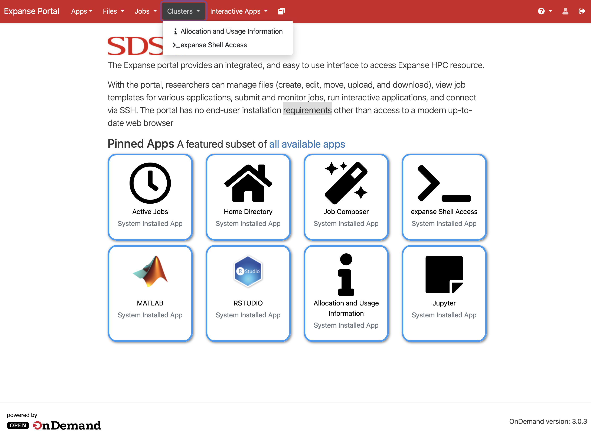
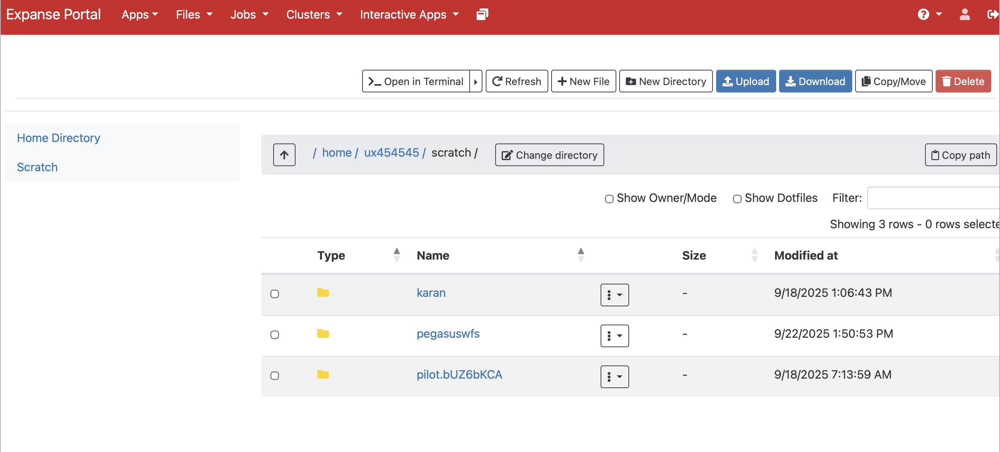
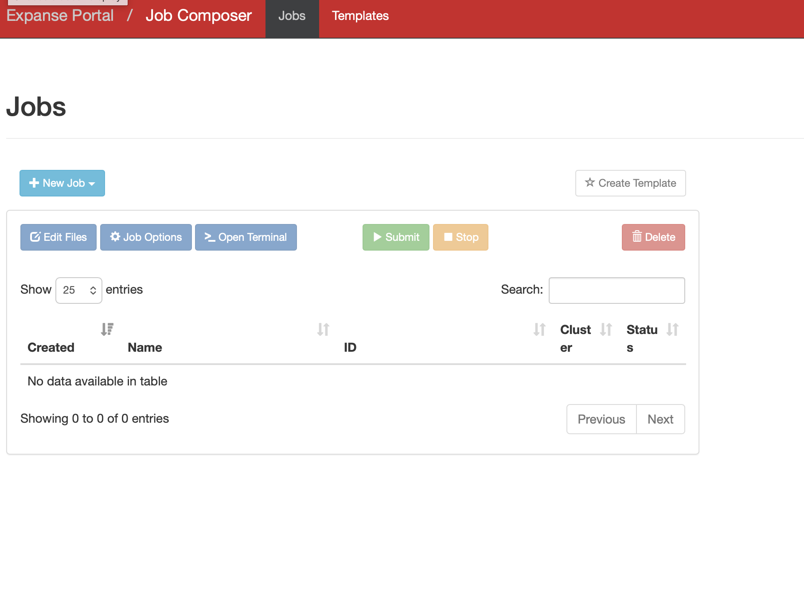
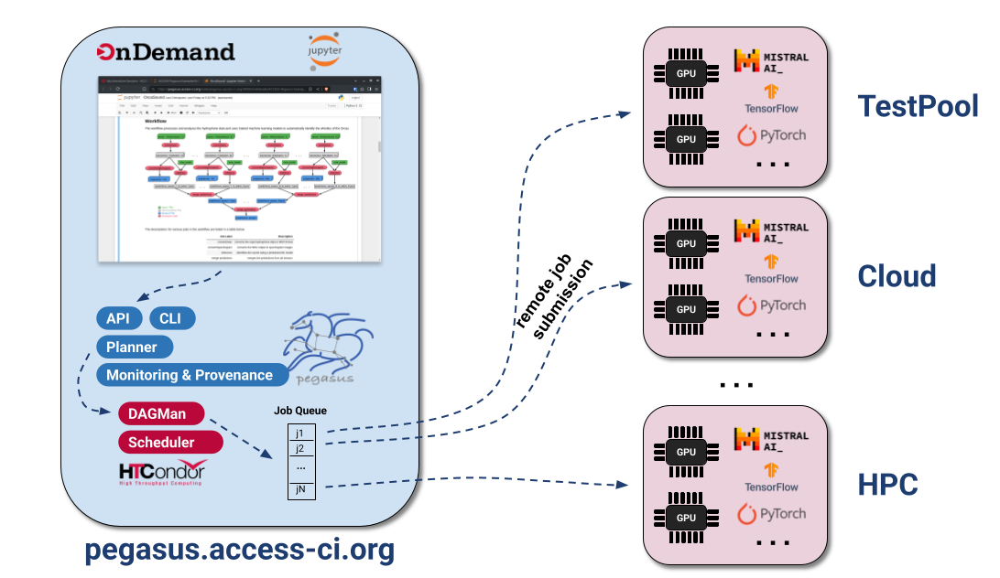

Using Science Gateways
This page is work in progress.
This module introduces science gateways — web-based portals that provide researchers with simplified access to advanced cyberinfrastructure (CI) resources without requiring deep technical knowledge of the underlying systems.
What are Science Gateways?
Science gateways are community-developed platforms that provide scientists, engineers, and students with browser-based access to computing, data, and other resources needed to advance research and education in their fields.
A science gateway typically provides a web-based interface that abstracts away the complexity of the underlying CI resources, allowing researchers to focus on their scientific work rather than the technical details of running jobs on HPC clusters or managing data across distributed systems.
According to the Science Gateways Community Institute (SGCI), a science gateway is:
A community-specific set of tools, applications, and data collections that are integrated together via a standards-based cyberinfrastructure, providing a customized user interface for a specific research community.
Science gateways can take many forms:
- Web portals — Browser-based interfaces to submit and monitor jobs on HPC clusters
- Domain-specific platforms — Tailored interfaces for specific scientific communities (e.g., genomics, climate science, materials science)
- Workflow execution environments — Platforms that allow users to compose and run complex scientific workflows without command-line expertise
- Data management platforms — Tools for managing, sharing, and analyzing large datasets across distributed storage systems
Examples of science gateways include:
- Open OnDemand — A web portal for accessing HPC clusters, deployed on most ACCESS resources
- Galaxy — A web-based platform for bioinformatics and data analysis
- ACCESS Pegasus — A gateway for running Pegasus workflows on ACCESS resources
- nanoHUB - a diverse community of nanotechnology researchers and educators
- CIPRES Science Gateway — A platform for phylogenetic inference using national CI
How Can Science Gateways Help Researchers?
Science gateways lower the barrier to entry for using advanced CI resources in several important ways.
Ease of Access
Traditional HPC clusters require users to:
- Install and configure SSH clients
- Learn command-line interfaces
- Understand job scheduler syntax (SLURM, SGE, PBS, etc.)
- Transfer files manually using
scpor similar tools
Science gateways eliminate these barriers by providing intuitive web-based interfaces that work directly in your browser — no software installation required.
Domain-Specific Interfaces
Rather than providing a generic command-line interface, science gateways often provide interfaces tailored to specific scientific workflows. For example, a gateway for structural biology may offer tools specifically designed for protein structure analysis, hiding the complexity of running those analyses on HPC clusters.
Democratization of Computing
Science gateways make advanced computing resources accessible to a broader community of researchers, including:
- Researchers at smaller institutions without dedicated HPC staff
- Students and early-career researchers learning to use CI resources
- Domain scientists without a strong computational background
- Researchers who need to run occasional (not routine) computations on national resources
Reproducibility and Collaboration
Many science gateways provide features that enhance reproducibility and collaboration:
- Shared workflows — Users can share analysis pipelines with colleagues
- Provenance tracking — The gateway records what was run, when, and with what inputs
- Community resources — Pre-built tools and workflows contributed by the broader community
Open OnDemand
Open OnDemand (OOD) is an open-source, web-based platform developed by the Ohio Supercomputer Center (OSC) that provides browser-based access to HPC resources. It is widely deployed across academic HPC centers and is the standard web portal available on most ACCESS resources.
Open OnDemand allows researchers to:
- Access HPC cluster resources without any client software installation
- Browse and manage files on the cluster filesystem
- Submit and monitor batch jobs through a graphical interface
- Launch interactive applications including Jupyter notebooks, RStudio, MATLAB, and more

Key Features of Open OnDemand
1. File Manager
The built-in file manager lets you browse the cluster filesystem, upload and download files, and edit text files directly in your browser — without configuring SFTP clients or using the scp command.

2. Job Composer
The job composer provides a form-based interface for creating and submitting batch jobs to the cluster scheduler. It supports job templates so you can create new submissions based on previously run jobs, reducing the need to remember scheduler syntax.

3. Interactive Applications
One of the most powerful features of Open OnDemand is the ability to launch interactive applications that run directly on cluster compute nodes. Common interactive applications available include:
- Jupyter Notebooks — Run Python, R, and Julia notebooks on HPC compute nodes, giving you interactive data analysis with access to the cluster’s memory and CPUs
- RStudio — A full-featured RStudio environment running on cluster resources
- MATLAB — Interactive MATLAB sessions with cluster-scale compute
- Remote Desktop — Full graphical desktop sessions for applications that require a GUI
4. Shell Access
Open OnDemand provides a web-based terminal that gives you command-line access to the cluster login node directly in your browser, without needing an SSH client. This is especially attractive for novice users or first time users, who need terminal access to a large HPC resource and need to login to the resource using 2 factor authentication.
Accessing Open OnDemand on ACCESS Resources
Most ACCESS HPC resources have Open OnDemand deployed. To access a cluster via Open OnDemand, navigate to the resource’s portal URL, authenticate with your ACCESS credentials, and you will be presented with the dashboard.
| ACCESS Resource | Open OnDemand URL |
|---|---|
| Anvil (Purdue) | https://ondemand.anvil.rcac.purdue.edu |
| Bridges-2 (CMU) | https://ondemand.bridges2.psc.edu |
| Delta (NCSA) | https://login.delta.ncsa.illinois.edu |
| Expanse (SDSC) | https://portal.expanse.sdsc.edu |
A full list of ACCESS resources with Open OnDemand is available at support.access-ci.org/tools/ondemand.
Launching a Jupyter Notebook via Open OnDemand
Here is a walk-through of launching a Jupyter Notebook on the Expanse cluster at SDSC using Open OnDemand:
In order to run the notebooks, you need to have a user account at SDSC. This example, is for illustration purposes.
- Navigate to https://portal.expanse.sdsc.edu and log in with your ACCESS credentials.
- Click on Interactive Apps in the top navigation menu.
- Select Jupyter Notebook from the list of available applications.
- Fill in the job parameters on the form:
- Account: your ACCESS allocation account name
- Partition:
shared(for single-node jobs) orcompute - Number of cores: e.g.,
4 - Memory: e.g.,
16 GB - Walltime: e.g.,
2:00:00
- Click Launch to submit the interactive job to the scheduler.
- Wait for the job to start — the status will change from Queued to Running.
- Click Connect to Jupyter to open the notebook interface in a new browser tab.
Once connected, you have a fully functional Jupyter environment with direct access to the cluster’s compute resources, shared filesystems, and installed software modules.
Interactive jobs on Open OnDemand behave like any other batch job — they consume allocation credits for the time requested. Request only what you need, and remember to close your session when done to release the resources back to the pool.
ACCESS Pegasus: A Science Gateway for Workflow Execution
ACCESS Pegasus is a science gateway that provides researchers with a ready-to-use environment for running Pegasus Workflows on ACCESS resources — without needing to install or configure Pegasus themselves.
As discussed in DC101, Pegasus WMS allows users to model their computational pipelines as workflows that execute on distributed computing resources. ACCESS Pegasus delivers this capability as a managed service, making it especially accessible to researchers new to workflow systems.
What is ACCESS Pegasus?
ACCESS Pegasus is an Open OnDemand based Science Gateway, that is maintained by the Pegasus team at the University of Southern California’s Information Sciences Institute (USC/ISI). It provides:
- A pre-configured Pegasus environment on an ACCESS-connected submit host
- Direct connectivity to multiple ACCESS resources (Expanse, Anvil, Bridges-2, etc.)
- Access to the OSG OSPool for high-throughput computing workloads
- Support from the Pegasus development team
ACCESS Pegasus gives you a ready-to-use Pegasus installation that is already configured to submit workflows to major ACCESS resources, removing the configuration burden from the researcher entirely.
ACCESS Pegasus Jupyter Setup
ACCESS Pegasus allows users to launch Jupyter notebooks from where they can submit workflows to a variety of resources. It is important to note that in case of ACCESS Pegasus, the notebooks are not launched on a node in a HPC cluster, as normally is the case with Open OnDemand setup.
In particular, there is a clear separation between the environment where the notebooks runs and where the compute jobs in the workflow execute. Notebooks runs on pegasus.access-ci.org, while the job is executed on any available HTCondor execution points.

Why Use ACCESS Pegasus?
For CHESS researchers looking to scale their data processing pipelines to national CI resources, ACCESS Pegasus offers several advantages over setting up Pegasus locally:
- Zero configuration — No need to install Pegasus or write site catalogs for each ACCESS resource. The submit host is pre-configured and maintained by the Pegasus team.
- Multi-site execution — A single workflow can span multiple ACCESS resources and the OSPool, allowing Pegasus to intelligently route work to available resources.
- Fault tolerance — Pegasus’ built-in retry and checkpointing mechanisms ensure your workflow completes even if individual jobs fail or a resource becomes temporarily unavailable — particularly valuable for long-running CHESS data analysis pipelines.
- Provenance — A full record of what ran, where, and when is maintained, supporting reproducibility of your analyses.
- Expert support — Direct access to the Pegasus development team, who can help you adapt your existing analysis pipeline into a portable workflow.
How to Get Started
Get an ACCESS account — Register at operations.access-ci.org/identity/new-user if you do not already have one.
Get an allocation (Optional) — To try out ACCESS Pegasus and do the training notebooks, you don’t need an allocation. For production workflows, users can tie-in their own allocation. Users can easily start with an EXPLORE allocation on one of the ACCESS resources. See the DC200 module for details on requesting an allocation.
Visit ACCESS Pegasus access — Visit support.access-ci.org/tools/pegasus and click the Try Pegasus button, to login to the gateway using your ACCESS ID.
Try training notebooks — Once you login and start a Jupyter notebook, you will see an ACCESS-Pegasus-Examples directory, that you can navigate to, and try the various training notebooks, to run your first Pegasus workflows.
- 01-Quickstart
- 02-Tutorial-Data
- …
- 09-Tutorial-SharedFS
ACCESS Pegasus Support
The Pegasus team provides support for ACCESS Pegasus users through the same channels as the broader Pegasus community:
- Email — Support requests and bug reports can be sent to
pegasus-support@isi.edu - Slack — Join the Pegasus users Slack workspace by requesting an invite at
pegasus-users.slack.comor by emailingpegasus-support@isi.edu - ACCESS Support Portal — support.access-ci.org
Galaxy
Galaxy is an open-source, web-based science gateway originally developed for bioinformatics, but now widely used across many scientific domains including X-ray science, genomics, climate modeling, and more. It allows researchers to build, execute, and share complex data analysis workflows entirely through a browser — no programming or command-line experience required.
Galaxy is governed by a large, international open-source community and is deployed at hundreds of institutions worldwide. Researchers can use the publicly hosted usegalaxy.org server, or work with a locally deployed instance configured for their facility’s specific tools and data.
Key Features of Galaxy
Tool Integration
Galaxy provides access to a large library of analysis tools — ranging from standard data processing utilities to domain-specific scientific applications. Tools are installed and managed by the Galaxy administrator, so users do not need to worry about software installation or version compatibility.
Workflow Builder
The visual workflow editor allows users to construct multi-step analysis pipelines by connecting tools together on a canvas. Each tool’s output is wired as input to the next step, automatically encoding the data dependencies that make up the workflow.

A workflow built in Galaxy can be saved, reused with new datasets, shared with colleagues, or published to the Galaxy community. This directly supports the reproducibility goals discussed earlier in this module.
History
Every analysis in Galaxy is tracked in a History — a panel that records every dataset and every tool invocation, along with the parameters used. A history provides a complete audit trail of your analysis, and can be shared or exported so that a collaborator can reproduce your work exactly.
Data Import and Management
Galaxy supports importing data from:
- Local file uploads via the browser
- Remote URLs
- Shared data libraries (pre-loaded datasets made available by the administrator)
- External repositories and transfer services (e.g., NCBI, Globus)
Workflow Sharing and the Galaxy ToolShed
The Galaxy ToolShed is a community repository of tools and workflows that can be installed into any Galaxy instance. This means that tools developed by one research group can be reused by the broader community without re-implementation.
Galaxy at CHESS, Cornell
CHESS researchers have access to a Galaxy instance configured specifically for X-ray data analysis workflows. This instance is deployed within the CHESS cyberinfrastructure and is pre-loaded with tools and workflows relevant to the types of data collected at CHESS beamlines.
The CHESS Galaxy instance provides tools for common X-ray data analysis tasks including:
[TBD]
The CHESS Galaxy instance submits compute jobs to the CHESS SGE cluster (the same compute farm described in the DC200 module), so workflows benefit from the cluster’s resources while users interact only with the Galaxy web interface.
Accessing the CHESS Galaxy Instance
[TBD]
Running a Simple Analysis in Galaxy
Here is the general flow for running an analysis in Galaxy:
[TBD and review]
Step 1 — Upload your data
Click the Upload Data button (the arrow icon at the top of the Tools panel) and either drag-and-drop files from your local machine or provide a URL to your dataset. Uploaded files appear as items in your current History.
Step 2 — Select a tool
Browse or search the Tools panel on the left to find the analysis tool you want to run. Clicking a tool opens its input form in the center panel.
Step 3 — Configure and run
Fill in the tool’s input parameters — selecting datasets from your History and setting any analysis options — then click Run Tool. The job is submitted to the cluster and a new entry appears in your History showing the job status.
Step 4 — Inspect results
Once the job completes (the History entry turns green), click on the output dataset to view it inline, download it, or pass it as input to the next tool in your analysis.
Step 5 — Build a workflow
After running an analysis manually, Galaxy can extract the steps into a reusable workflow automatically. Click Workflow → Extract Workflow from History to capture the full pipeline. You can then re-run the same workflow on a new dataset in a single step.
Summary
Science gateways like Open OnDemand, Galaxy and ACCESS Pegasus significantly reduce the barriers to using advanced computing resources. Whether you need to run interactive analyses in a Jupyter notebook on a national HPC cluster, or orchestrate complex multi-step workflows across distributed resources, science gateways provide the tools to do so without deep expertise in HPC system administration.
For CHESS researchers, the practical takeaways are:
- Open OnDemand is the easiest way to get started with ACCESS HPC resources — open a browser, log in, and launch a Jupyter notebook directly on the cluster.
- ACCESS Pegasus is the best path for researchers who want to run Pegasus-based workflow pipelines on national CI resources without the overhead of setting up and configuring Pegasus themselves.
- Both tools work seamlessly with the ACCESS allocation described in the DC200 module.